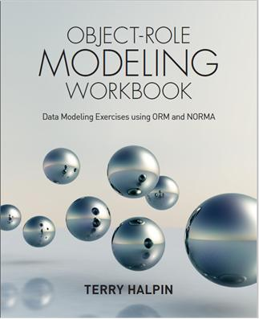
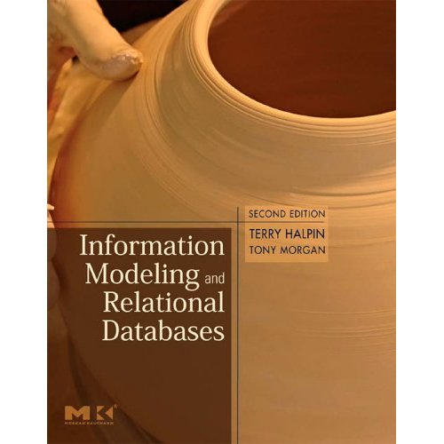

Here you'll find news about ORM tools and courses as well as links to other web resources featuring ORM-related material.
ORM 2 Graphical Notation Summary
A 7-page summary of the ORM 2 Graphical Notation, including examples, may be downloaded from here (367K).
The ORM Foundation
The ORM Foundation was a non-profit organization dedicated to the promotion of the fact-oriented approach to information modeling, but is no longer available. Its director Ken Evans died of cancer in 2024.
ORM formal syntax and semantics
The following two documents aim to provide a formal syntax and semantics for ORM in a concise way.
ORM formal syntax and semantics ORM syntax and semantics glossary
Fact-Orientation and Conceptual Logic This is a video of a keynote presentation by Dr Halpin at the EDOC2011 Conference in Helsinki, on 2011 September 1. This presentation provides a state-of-the-art overview of fact-orientation in general and second-generation Object-Role Modeling (ORM) in particular, highlighting its conceptual and visual support for logic-based modeling. To view the video, click here. .NET Show on ORM The 25th episode of the .NET Show focused on ORM, including an interview with Terry Halpin, Pat Hallock and Dick Barden, and demonstrations of the ORM and database modeling features of Microsoft Visio for Enterprise Architects. Fact-based Database Design This one hour webcast by Dr. Halpin summarizes the benefits of the fact-based, ORM approach to database design. To view the webcast, go to searchdatabase.com, go to the Expert Technical Advice section, choose the webcast, and enter your details. (1) NORMA (Natural ORM Architect) is a modeling tool under development that supports the next generation of ORM (ORM 2). Implemented as an open-source plug-in to Microsoft's Visual Studio .NET, NORMA also runs as a plug-in to a free Community Edition of Visual Studio (2013 or later -- see home page for more details). For further details on the ORM 2 graphical notation, see ORM 2 Technical Report 1. A series of laboratory tutorials on NORMA are also downloadable as Microsoft Powerpoint files using the links below. For NORMA using Visual Studio 2017, 2019 or 2022, use NORMA_Lab1_new, and for earlier versions use NORMA_Lab1. Here is a link to NORMA.
NORMA Lab 1 new (2) ORM2_Draw2 Visio stencil and template for drawing ORM 2 schemas. These files are accessible in the following zipped folder. The stencil has recently been significantly upgraded by Andy Carver. See the ReadMe file for instructions. This stencil requires Visio standard edition (or higher), which may be purchased from Microsoft, and is for drawing only, not code generation. It is completely separate from the NORMA tool. (3) Microsoft includes a powerful ORM and logical database modeling solution within its Visio for Enterprise Architects (VEA) product. The 2005 release of of VEA includes some minor upgrades (e.g. a driver for SQL Server 2005 is now included). Visio for Enterprise Architects appears to be included in MSDN Premium subscriptions. The least expensive way to get an MSDN Premium subscription appears to be through a purchase of “Visual Studio Professional Edition with MSDN Premium Subscription.” Click here for MSDN subscription information and purchase details. Details on a COM API to the database modeling engine for this tool are accessible at websites maintained by John Miller (see below), and a free add-on that uses this API to expose data model details in the form of an XML document has been released by Scot Becker (see below). The first eight of a series of articles on how to use the database modeling solution within Visio for Enterprise Architects were first published in the Journal of Conceptual Modeling (see InConcept entry below). Here are slightly revised versions of these articles: Microsoft's new database modeling tool: Part 1 (598K) Microsoft has also published revised versions of five of these articles on its MSDN website: Visio-Based Database Modeling in Visual Studio .NET Enterprise Architect: Part 1; Part 2; Part 3; Part 4; Part 5. A free Visio Viewer to enable users who have not purchased Visio to view Visio files is now available for download. (4) The former ORM tool known as VisioModeler is freely available as an unsupported product from Microsoft Corporation (as a 25 MB download). The Microsoft download site no longer includes this program, but we are exploring other options to make it available. Models developed in VisioModeler may be exported to Microsoft's current and future ORM solutions. VisioModeler includes an online manual to explain its use. In addition, you may download this basic tutorial on how to use VisioModeler (312k). (5) A modeling tool caled CaseTalk based on the ORM-dialect known as Fully Communication Oriented Information Modeling (FCO-IM) is available from Bommeljé Crompvoets en partners b.v., headquartered in Utrecht, The Netherlands. To find out more about this tool, click this CaseTalk website or e-mail BCP Software at info@casetalk.com (e.g. for a free, one year licence to use CaseTalk for educational purposes). (6) A freeware ORM tool known as Infagon is now available from Mattic software. Infagon is based on the same dialect as CaseTalk. To download or obtain more details about this tool, click the Infagon home page. (7) ActiveFacts is a semantic modeling toolkit under development by Clifford Heath for constructing and querying ORM models. To download or obtain more details about this tool, click the Data Constellation home page. (8) A Community Edition of the ORM Studio tool developed by Viev Pty Ltd was released on July 1, 2015. To download or obtain more details about this tool, click ORM Studio. The first printing of the book included a number of errors, as detailed in the Book Errata. Any errors in the first printing of the book will be detailed in the Book Errata. The following book provides a detailed coverage of how to use Microsoft's high end Visio tool to design databases. Halpin, T., Evans, K., Hallock, P. & MacLean B. 2003, Database Modeling with Microsoft Visio for Enterprise Architects, Morgan Kaufmann Publishers: San Francisco, ISBN 1-55860-919-9. The book may be ordered online from various booksellers, including this Amazon website and this Barnes & Noble website. The first printing of the book included a number of errors, as detailed in the Book Errata. For a discussion of research topics on UML, see Siau, K. & Halpin, T.A. (eds), UML: Systems Analysis, Design and Development Issues published by Idea Group Publishing. This book includes a chapter providing an in-depth comparision of ORM and UML. Details on this book are available at the book's website. If you are interested in an early formalization of ORM, and can handle large downloads (11 MB pdf file -- Warning: this may take several minutes to download), here is a bitmap copy of my PhD thesis. Unfortunately, it was impractical to make this available in text form, as I wrote the thesis in 1989 using good old WordStar and a tailor-made driver to print all the symbols on an old dot matrix printer. Microsoft added Course 2090 to its official curriculum. This 3-day, instructor-led course is titled “Modeling Business Requirements to Create a Database Using Microsoft Visual Studio .NET Enterprise Architect”. It focuses on the use of ORM and Visio for Enterprise Architects to perform database modeling -- see Course 2090 details. Instruction for this course is available from various qualified ORM instructors and Microsoft Certified Trainers. Before its acquisition by Microsoft Corporation, Visio certified a number of consulting partners to offer training courses in ORM. One of these partners, InConcept Inc., offers 5-day ORM course in Minneapolis (for details, e-mail path@inconcept.com). The Journal of Conceptual Modeling is a free journal produced by InConcept and dedicated to data modeling, design, and implementation issues. The goal of this publication is to promote communication between professionals, share knowledge, and to educate our readers. The target audience is large: database professionals and developers, end users and business professionals, students and teachers, and anyone else using, developing, or considering development of a database system. The Business Rules Community is an online vertical community for business rules professionals. Membership is free, and includes access to the Business Rules Journal, which includes regular columns by renowned experts in the business rules movement, as well as feature articles by leading industry professionals. This journal now includes a regular column by Terry Halpin. This column includes articles on topics such as verbalization of business rules, temporal modeling, and ontology modeling. Some weeks after the publication of one of these articles on the business rules community website, a pdf version of the article is typically made available below. If available, you may download the pdf version. Otherwise, click the Business Rules Community (BRC) website link to view it there. Modeling Concepts: Setting the Scene Further ORM Researchers/Consultants Professor Enrico Franconi Professor Enrico Franconi heads the KRDB centre at the Free University of Bozen/Bolzano, Italy. His ORM research focuses on the formal syntax and semantics of ORM, and the development of tools to extend the functionality of the NORMA tool (e.g. additional formal detection of illegal complex contraint pattern violations, and further derivation capabilities). Professor Sjir Nijssen Professor Sjir Nijssen is one of the original pioneers of fact-oriented modeling, and in particular the NIAM, and later CogNIAM, versions of this approach. He has been active in conceptual modeling since the mid-1970s,when he led a group of researchers at Control Data in Belgium to develop fact-oriented technology, and has wide experience in both industry and academia. Sjir's major contributions to fact-orientation include introducing the circle-box notation for object types and roles, and adding a linguistic orientation and design procedure for specifying conceptual schemas. He is currently Chief Technical Officer for PNA. Professor Robert Meersman Professor Robert Meersman is one of the original ORM pioneers, introducing subtyping to the methodology when it was first developed in the Control Data research institute at the Free University of Brussels (VUB). He has been an active researcher in information system semantics and conceptual query technology ever since, and is currently exploring the use of ORM as an ontological basis for the semantic web. He is emeritus professor in the department of computer science at the Free University of Brussels, and director of its STARlab research laboratory. His home page includes teaching and research information.
NORMA Lab 1
NORMA Lab 2
NORMA Lab 3
NORMA Lab 4
NORMA Lab 5
NORMA Lab 6
NORMA Lab 7
NORMA Lab 8
Currently the NORMA software tool supports entry of ORM2 schemas, verbalization of of most constraints, and code generation (for basic constraints) to a variety of DBMSs (including SQL Server, DB2, Oracle, PostgreSQL, and MySQL) as well as class models and XML schema. NORMA is capable of importing ORM schemas entered in Visio for Enterpise Architects, but the diagrams need to be laid out manually.
Microsoft's new database modeling tool: Part 2 (447K)
Microsoft's new database modeling tool: Part 3 (231K)
Microsoft's new database modeling tool: Part 4 (252K)
Microsoft's new database modeling tool: Part 5 (255K)
Microsoft's new database modeling tool: Part 6 (228K)
Microsoft's new database modeling tool: Part 7 (290K)
Microsoft's new database modeling tool: Part 8 (505K)

My latest book on ORM has just been published by Technics Publications. Titled Object-Role Modeling Workbook, and aimed mainly at data modleing practitioners, this is a sequel to my previous book "Object-Role Modeling Fundamentals". This book briefly reviews the fundamentals of ORM, and then discusses additional topics such as model reports generation, vocabulary glossaries, relational mapping options, annotated relational schemas, schema optimization, and data modeling patterns. Written in easy-to-understand language, it illustrates each topic with simple examples, and explains how to use the freeware NORMA tool to implement the ideas discussed. The book also includes many practical exercises to promote expertise in the techniques covered, with answers provided to all the exercise questions. The book is available in both print and electronic form from various channels, as well as directly from the Technics Publications website. Anyone who ordes the print version of the book from that website can receive a 25% discount by using the coupon code ORMFundamentals.

My second latest book on ORM has been published by Technics Publications. Titled Object-Role Modeling Fundamentals, and aimed mainly at data modeling practitioners, this provides an up-to-date coverage of the latest enhancements to ORM and its conceptual schema design procedure. The book also includes lab exercises for using the NORMA tool to create ORM schemas and map them to relational database schemas. The book is available in both print and electronic form from various channels, as well as directly from the Technics Publications website. Anyone who orders the print version of the book from that website can receive a 25% discount by using the coupon code ORMFundamentals.

For an in-depth treatment of ORM, see Halpin, T. & Morgan, T. 2008, Information Modeling and Relational Databases, Second Edition (ISBN: 978-0-12-373568-3), published by Morgan Kaufmann Publishers, an imprint of Elsevier. This major upgrade of the earlier edition runs to 970 pages and includes loads of new and updated content. Fully updated to ORM 2 and UML 2 and the latest developments in SQL and XML, this book reveals the true power of semantic data modeling (covering ORM, ER, and UML), as well as addressing business process modeling, relational databases, and other modeling topics such as the semantic web. Here is a link to the book on Amazon.

The 3rd edition of Information Modeling and Relational Databases (ISBN: 9780443237904) will be published by the end of July, 2024. For readers familiar with the second edition of this book, the major differences are now summarized. The coverage of ORM, ER, UML, SQL, OWL, and BPMN has been thoroughly updated to cover their latest versions. A significant amount of new material has been added. Various data file formats such as CSV, XML, JSON, YAML, and some other markup languages are now covered, and a more thorough treatment is provided for non-relational databases, especially NoSQL. All previous chapters have been substantially revised, with several topics covered in greater depth. The new content has led to a larger book.
 InConcept, Inc. is a database consulting firm dedicated to excellence in data modeling. Emphasis is placed on the conceptual model using Object Role Modeling (ORM). This higher level design is more suitable for review with customers while the logical a nd physical models, derived from the conceptual model, are more suited to the technical staff. Modeling a database at the conceptual level significantly reduces design errors, thus reducing overall cost. Using ORM enables the designer and the business user to communicate and capture business rules more readily and easily.
InConcept, Inc. is a database consulting firm dedicated to excellence in data modeling. Emphasis is placed on the conceptual model using Object Role Modeling (ORM). This higher level design is more suitable for review with customers while the logical a nd physical models, derived from the conceptual model, are more suited to the technical staff. Modeling a database at the conceptual level significantly reduces design errors, thus reducing overall cost. Using ORM enables the designer and the business user to communicate and capture business rules more readily and easily.
Verbalizing Business Rules (part 1): PDF file (304K); BRC link.
Verbalizing Business Rules (part 2): PDF file (304K); BRC link.
Verbalizing Business Rules (part 3): PDF file (301K); BRC link.
Verbalizing Business Rules (part 4): PDF file (316K); BRC link.
Verbalizing Business Rules (part 5): PDF file (286K); BRC link.
Verbalizing Business Rules (part 6): PDF file (269K); BRC link.
Verbalizing Business Rules (part 7): PDF file (279K); BRC link.
Verbalizing Business Rules (part 8): PDF file (330K); BRC link.
Verbalizing Business Rules (part 9): PDF file (283K); BRC link.
Verbalizing Business Rules (part 10): PDF file (89K); BRC link.
Verbalizing Business Rules (part 11): PDF file (89K); BRC link.
Verbalizing Business Rules (part 12): PDF file (136K); BRC link.
Verbalizing Business Rules (part 13): PDF file (145K); BRC link.
Verbalizing Business Rules (part 14): PDF file (172K).
Verbalizing Business Rules (part 15): PDF file (172K).
Verbalizing Business Rules (part 16): PDF file (172K).
Temporal Modeling (part 1): PDF file (311K).
Temporal Modeling (part 2): PDF file (317K).
Temporal Modeling (part 3): PDF file (130K).
Temporal Modeling (part 4): PDF file (613K).
Temporal Modeling (part 5): PDF file (594K).
Temporal Modeling (part 6): PDF file (630K).
Temporal Modeling (part 7): PDF file (152K).
Ontological Modeling (part 1): PDF file (107K).
Ontological Modeling (part 2): PDF file (83K).
Ontological Modeling (part 3): PDF file (138K).
Ontological Modeling (part 4): PDF file (72K).
Ontological Modeling (part 5): PDF file (109K).
Ontological Modeling (part 6): PDF file (160K).
Ontological Modeling (part 7): PDF file (145K).
Ontological Modeling (part 8): PDF file (161K).
Ontological Modeling (part 9): PDF file (126K).
Ontological Modeling (part 10): PDF file (147K).
Ontological Modeling (part 11): PDF file (86K).
Ontological Modeling (part 12): PDF file (114K).
Ontological Modeling (part 13): PDF file (148K).
Ontological Modeling (part 14): PDF file (106K).
Ontological Modeling (part 15): PDF file (92K).
Logical Modeling (part 1): PDF file (259K).
Logical Modeling (part 2): PDF file (235K).
Logical Modeling (part 3): PDF file (331K).
Logical Modeling (part 4): PDF file (348K). Also onlne at BRC link.
Logical Modeling (part 5): PDF file (514K). Also online at BRC link.
Logical Modeling (part 6): PDF file (929K). Also online at BRC link.
Logical Modeling (part 7): PDF file (1244K). Also online at BRC link.
Logical Modeling (part 8): PDF file (848K). Also online at BRC link.
Logical Modeling (part 9): PDF file (835K). Also online at BRC link.
Logical Modeling (part 10): PDF file (880K). Also online at The Business Rules Community website.
Logical Modeling (part 11): PDF file (924K). Also online at The Business Rules Community website.
Logical Modeling (part 12): PDF file (552K). Also online at The Business Rules Community website.
Logical Modeling (part 13): PDF file (594K). Also online at The Business Rules Community website.
Logical Modeling (part 14): PDF file (542K). Also online at The Business Rules Community website.
Dr Tony Morgan is an experienced ORM consultant based in England, and is co-author of the second edition of Information Modeling and Relational Databases. After obtaining a PhD from Cambridge University he worked in both industry and academia for several years. He now specializes in both information modeling and process modelling, and has presented at numerous ORM conferences. He can be contacted via e-mail at info@fbmsciences.com.
Dr Arthur ter Hofstede
Dr Arthur ter Hofstede, a prominent ORM researcher, is an Associate Professor and Leader of the Cooperative Information Systems Special Interest Group within the Faculty of Information Technology at the Queensland University of Technology in Brisbane, Australia. His home page includes teaching and research information, as well as an extensive list of publications, most of which address data modeling issues.
Dr Erik Proper
Dr H. A. (Erik) Proper, holds a research position at the Public Research Centre Henri Tudor, Luxembourg, as well as academic post at the Radboud University of Nijmegen, The Netherlands. His theoretical and industrial research covers many information systems topics, including schema evolution, schema optimization and conceptual query technology. His website includes an extensive list of downloadable research publications, many of them directly related to ORM.
Dr Andy Carver
Dr Andy Carver is an ORM consultant and experienced educator, currently teaching at INTI International University, Malaysia. He recently made substantial upgrades to the ORM 2 Draw stencil for drawing ORM 2 diagrams in Visio.
John Miller
John Miller is the principal of Perpetual Data Systems, a consultancy based in California. John maintains “Wikis” with details about the unsupported COM API to the database modeling solution in Microsoft Visio for Enterprise Architects. Here is his ORM Wiki, and here is his Viso Modeling Engine Wiki.
Scot Becker
Scot Becker is the principal of Orthogonal Software, a consultancy based in Minneapolis. Scot has released Orthogonal Toolbox, a free add-on to Visio for Enterprise Architects that exposes most of the model details stored in an ORM source model or a logical database model as an XML document. This information is extracted using the COM API to the modeling engine mentioned above.
Scot has now added an informative blog site ObjectRoleModeling.com that includes lots of useful tips and news about ORM and related database modeling topics.
Ken North
Ken North is a database practitioner and author of several publications on databases, including the following articles that discuss ORM: ‘Modeling, metadata and XML’, ‘Modeling, data semantics and natural language’ and ‘Database design for prime time’.
The EROSS-2020 conference organized by the KRDB centre at the Free University University of Bozen/Bolzano, Italy in September 2020 and offered online included a 90 minute presentation and Q&A session by Terry Halpin titled "Reference Scheme Modelling". The Powerpoint slides for this presentation are available here. The video of the presentation is available at https://www.youtube.com/watch?v=EYN4fwtp-YA and the Q&A session is available at https://www.youtube.com/watch?v=DGjgd8eLAh4.
The Data Modeling Zone Europe 2016 conference held in Berlin, Germany, October 10-11, 2016, included four hours of presentations on fact-oriented modeling by myself, four hours of presentations on fact based modeling by Clifford Heath, as well as two one hour presentations relevant to fact based modeling (one on CaseTalk by Marco Wobben, and one on data modeling for polyglot persistence by Phill Radley). For further details about future DMZ conferences, see the Data Modeling Zone Europe website.
The Data Modeling Zone Australia conference held in Sydney, Australia, May 13-14, 2015, included two presentations on fact-oriented modeling, one by Clifford Heath and one by myself. My presentation on modeling of reference schemes is accessible as a pdf file here (1138 K).
The Data Modeling Zone conference held in Portland, Oregon, October 20-22, 2014, included three presentations on fact-oriented modeling. Two of these were 3 hour workshops, one by Dr Gordon Everest and one by myself, and the other was a one hour presentation by myself. The full program is accessible online from the Data Modeling Zone website.
The ORM 2014 International Workshop was held in 2014 year in the beautiful town of Bolzano, Italy. Hosted by Enrico Franconi and the KRDB centre at the Free University of Bozen/Bolzano, the successful workshop was attended by academic and industrial experts from several countries.
The 9th International Workshop on Fact-Oriented Modeling (ORM2013) was held September 11-13, 2013 in Graz, Austria in conjunction with the On The Move Conferences. The Final Call for Papers for ORM2013 may be found here. The slides of the presentations are accessible in the ORM Foundation Library.
The 8th International Workshop on Fact-Oriented Modeling (ORM2012) was held September 12-14, 2012 in Rome in conjunction with the On The Move Conferences. The Final Call For Papers for ORM2012 may be found here. Slides for the presentations are accessible in the ORM Foundation Library.
The Exploring Modeling Methods in Systems Analysis and Design (EMMSAD) series of annual conferences provide a forum to discuss the latest advances in information systems modeling. The EMMSAD2012/EuroSymposium2012 Conference was held June 25-26 in Gdansk, Poland in conjunction with CAiSE 2012. The first Call For Papers for EMMSAD2012 may be found here. Details about this EMMSAD conference as well as resources from past EMMSAD presentations may be found here.
The 7th International Workshop on Fact-Oriented Modeling (ORM2011) was held October 19-21, 2011 in Hersonissou, Crete, Greece in conjunction with the On The Move Conferences. Slides for the presentations are accessible in the ORM Foundation Library.
The ORM2010 Workshop was held October 27-29, 2010 in Hersonissou, Crete, Greece. Slides for the presentations are accessible in the ORM Foundation Library.
The Data Management Association is an international body of professionals dedicated to improving the management of data. The Enterprise Data World Conference for 2009 was held in Tampa, Florida on April 5-9.
The International Business Rules Forum for 2009 was held in Las Vegas, November 1-5.
The Entity Relationship Conference series addresses all forms of conceptual modeling (ER, ORM, UML). The ER-2009 conference was held in Gramado, Brazil on November 9-12, 2009.

ORM Home ORM in Detail Modeling Issues
Conceptual Queries UML and ORM Resources
All diagrams on this site were created with Microsoft Visio